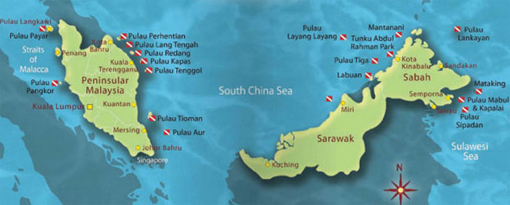
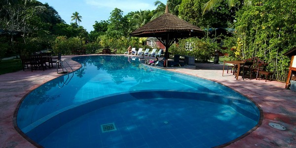
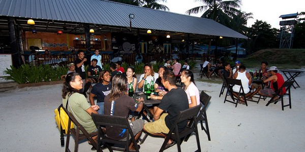
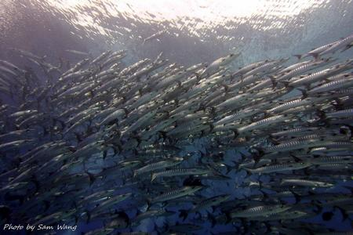
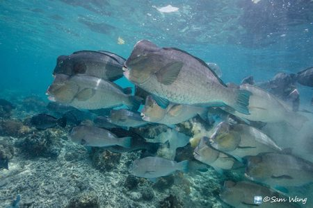
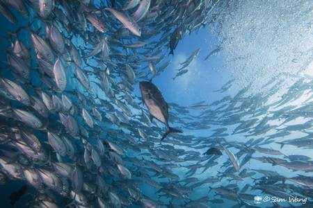
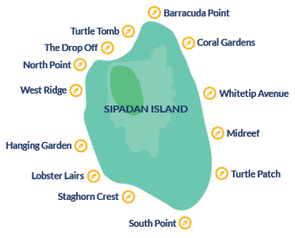

【景點介紹】 |
|
馬來西亞 馬來西亞聯邦，大家稱馬來西亞(Malaysia)或簡稱「大馬」，位於東南亞，全境有13個州，分為東西兩大部分，中間隔著南海，西半部位於馬來半島，稱「西馬」，共11個州，東半部位於婆羅洲北部有沙巴(Sabah)與沙勞越(Sarawak) 2州，俗稱「東馬」。 |
|  |
|
氣候 馬來西亞位置近於地球赤道，故其氣候為熱帶氣候，常年炎熱而多雨，空氣中的濕氣非常高，一年之中的溫差變化極小，平均溫度在26—29℃之間，全年雨量充沛，10—12月是雨季。在馬來西亞旅遊，基本上全年都適宜。白天雖然炎熱，但是午後有陣雨，晚上會有季風吹拂，十分涼爽。而針對西巴丹所在的東馬而言，11月到隔年的3月是雨季，其他時候都是高溫炎熱的好天氣。 |
|
人文 馬來西亞是個多元種族特色的國家，主要的民族是：佔大多數而且是回教徒的馬來人(59％)，還有華人(32.1％)、印度人(8.2％)、及其他(0.7％)，在沙巴和砂勞越的原住民如：卡達山族、巴曹族、木如族、格拉比族、達雅族和依班等等。馬來人是馬來半島的較早住民，最早是由印尼移至馬來半島。華人移至馬來半島則較晚，主要是明朝及清朝兩代由中國大陸的廣東、福建及海南島移民至馬來西亞。使用的語言包括馬來語、英語、華語、印語、其中以馬來語為馬來西亞之國語。 對華人而言，有閩南話、福建話、廣東話、客家話、潮州話、海南話。馬來人(Malay)，原是從印尼而來。西馬中北邊較少，南部多些，最多是東馬。 印度人分成七、八種不同語言等。雖然馬來西亞為一回教國家，但它也確保其他民族的信仰自由。其他宗教有佛教、道教、印度教、天主教、興都教和基督教等。 |
|
地點 西巴丹島(Sipadan)除了以海龜聞名之外，還有三大魚種(隆頭鸚哥、梭魚、Jackfish)，不但數量龐大，而且定時定點，是一個深受各地熱愛潛水人士讚賞的「潛水樂園」，該島位於仙本那(Semporna)的岸外群島，即沙巴州東南方的西利比斯海面上的一個小島，地處北緯四度左右，雖極近赤道，卻甚涼爽，大馬政府向國內外宣傳這裡是「世界首屈一指的潛水天堂」，其島週圍的海底最深可達六百公尺，就如深海中的一座山。 |
|
西巴丹島為世界頂尖的潛點，從600米的深淵流往北部蘇拉威西海，形成一個古老的火山。頂級的西巴丹潛水點，周圍佈滿星羅棋布當地珊瑚礁，您有可能看到鯊魚、海龜和其他大中上層魚類。輕鬆的延著海流潛水，西巴丹島周圍海域任何地方都擁有最大海龜種群。幾乎每一個西巴丹島都可以看到潛水綠海龜，甚至有龜洞。為了保護豐富的海洋多樣性的西巴丹島，島上已經為國家公園保護區，所有度假設施的基礎上西巴丹島本身移除，每日只開放120個名額許可進入西巴丹。 |
|  |  |
【著名潛點】 |
| Barracuda Point |
| 眾人去西巴丹島最愛的潛點，在此有機會遇到成群的梭魚與傑克風暴或隆頭鸚哥，在這兒多是放流潛水的形式居多，在後半段的沙地上也時常遇到滿地的花園鰻與各式礁鯊，是個令人期待的潛點。 |
| The Drop Off/Sipadan Jetty |
| 就在西巴丹島碼頭的正下方，屬於峭壁潛水，往下可以深到600米，有許多巨大的海扇。 |
| Turtle Cavern |
| 西巴丹島很具特色的景點之一，一個深藏水底的洞穴，可以深入海島65米深處，洞穴內有許多鐘乳石，也被稱為龜塚。洞穴入口處可見成群的魚群，但這個潛點只允許經驗豐富的洞穴潛水員進入深處探險。 |
| Coral Gardens |
| 遍地都是絢爛奪目的軟硬珊瑚，也是海龜與魟魚最佳觀賞據點。 |
|  |  |  |
【建議行程】 |
|
 |
|
| 主辦單位 | 愛潛水股份有限公司 | 承辦人：愛潛水 | 行動電話：0909-097696 |
| TEL：02-2882-7696 | FAX：02-2882-7656 | ||
| E-MAILl：info@idiving.com.tw | |||
| 地址：台北市士林區前港街8號 | |||
| 協辦單位 | 萬陽旅行社有限公司 | 業務請洽：蘇恒璀 | 行動電話：0937-196518 |
| TEL：02-2517-1333 | FAX：02-2508-1537 | ||
| E-MAIL：tracy410@ms45.hinet.net | |||
| 地址：台北市南京東路3段91號四樓之三 | |||